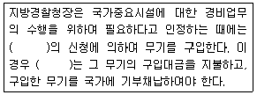

경비지도사-2차(경비업법) (2008-11-09 기출문제)
1. 특수경비원이 무기를 휴대하고 경비업법령상 무기의 안전수칙을 위반하여 범죄를 범한 경우 그 범죄의 법정형의 2분의 1까지 가중처벌한다는 규정에 해당하는 형법상 범죄가 아닌 것은?
- 형법 제257조 제1항 (상해죄)
- 형법 제262조 (폭행치사상죄)
- 형법 제324조 (강요죄)
- 형법 제267조 (과실치사죄)
(정답률: 45%)

2. 경비업법령상 특수경비원을 배치한 시설주가 갖추어 두어야 할 장부 또는 서류가 아닌 것은?
- 근무일지
- 감독순시부
- 순찰표철
- 경비구역배치도
(정답률: 65%)
3. 재난 및 안전관리기본법상 용어의 정의로 틀린 것은?
- 해외재난은 대한민국의 영역밖에서 대한민국 국민의 생명ㆍ신체 및 재산에 피해를 주거나 줄 수 있는 재난으로서 정부차원의 대처가 필요한 재난을 말한다.
- 재난관리는 재난의 예방ㆍ대비ㆍ대응 및 복구를 위하여 행하는 모든 활동을 말한다.
- 해양에서의 재난의 경우에 긴급구조기관은 해양경찰청, 지방해양경찰청, 해양소방본부, 해양경찰서를 말한다.
- 긴급구조지원기관은 긴급구조에 필요한 인력ㆍ시설 및 장비를 갖춘 기관 또는 단체로서 대통령령이 정하는 기관 및 단체를 말한다.
(정답률: 32%)
4. 경비업법령상 가장 엄하게 처벌되는 경우는?
- 허가를 받지 아니하고 경비업을 영위한 자
- 국가중요시설의 정상적인 운영을 해치는 장해를 일으킨 특수경비원
- 직무상 알게 된 비밀을 누설하거나 부당한 목적을 위하여 사용한 자
- 정당한 사유없이 무기를 소지하고 배치된 경비구역을 벗어난 특수경비원
(정답률: 69%)
5. 경비업법령상 경비협회가 공제사업을 하기 위한 목적으로 적절하지 않은 것은?
- 경비원이 업무수행 중 과실로 경비대상에 입힌 손해에 대한 경비업자의 배상책임을 보장하기 위하여
- 경비원이 업무수행 중 과실로 제3자에게 입힌 손해에 대한 경비업자의 배상책임을 보장하기 위하여
- 경비원이 업무수행 중 고의로 경비업체에 입힌 손해에 대한 경비업자의 배상책임을 보장하기 위하여
- 경비원이 업무수행 중 고의로 경비대상에 입힌 손해에 대한 경비업자의 배상책임을 보장하기 위하여
(정답률: 57%)
6. 경비업법령상 경비협회에 대한 설명으로 틀린 것은?
- 경비협회는 경비업무의 연구와 경비원 교육ㆍ훈련을 업무로 한다.
- 경비협회는 경비원의 후생ㆍ복지에 관한 사항을 업무로 한다.
- 경비협회는 법인으로 한다.
- 경비협회에 관하여 이 법에 특별한 규정이 있는 것을 제외하고는 민법 중 재단법인에 관한 규정을 준용한다.
(정답률: 53%)
7. 경비업법령상 지도ㆍ감독 등에 관한 설명으로 틀린 것은?
- 경찰청장 또는 지방경찰청장은 경비업무의 적정한 수행을 위하여 경비업자 및 경비지도사를 지도ㆍ감독하며, 필요한 명령을 할 수 있다.
- 지방경찰청장은 대통령령이 정하는 바에 따라 특수경비업자에 대하여 보안지도ㆍ점검을 실시하여야 한다.
- 지방경찰청장은 특수경비업자에 대하여 연 2회 이상의 보안지도ㆍ점검을 실시하여야 한다.
- 이 법에 의한 경찰청장의 권한은 경찰청장의 재량으로 그 일부를 지방경찰청장에게 위임할 수 있다.
(정답률: 57%)
8. 지방경찰청장 또는 경찰관서장은 경비업법령상 과태료를 부과하고자 할 때 얼마 이상의 기간을 정하여 처분대상자에게 구술 또는 서면(전자문서 포함)에 의한 의견진술의 기회를 주어야 하는가?
- 10일 이상
- 14일 이상
- 7일 이상
- 30일 이상
(정답률: 31%)
9. 경비업법령상 일반경비원과 특수경비원 사이에 차이점이 없는 것은?
- 직무교육시간
- 경비원이 될 수 있는 신체조건
- 파업 또는 태업을 할 수 있는 점
- 금치산자가 경비원으로 될 수 없는 점
(정답률: 53%)
10. 경비업법령상 경비지도사 자격의 취소 또는 정지사유에 해당하지 않는 것은?
- 경비업자와의 업무계약사항을 성실하게 수행하지 아니한 경우
- 경비지도사자격증을 다른 사람에게 빌려주거나 양도한 경우
- 경찰청장 또는 지방경찰청장이 지도ㆍ감독을 위하여 발령한 명령을 위반한 경우
- 경비원의 지도ㆍ감독ㆍ교육에 관한 계획의 수립ㆍ실시 및 그 기록의 유지를 성실하게 수행하지 아니한 경우
(정답률: 18%)
11. 甲은 특수경비원으로서 신임교육을 받고 2008년 5월 1일부터 2008년 7월 31일까지 3개월간 A경비업체에서 근무하였다. 경비업법령상 甲이 3개월간 받았을 직무교육시간은 모두 몇 시간이어야 하는가? (단, 신임교육시간은 제외한다)
- 12시간
- 15시간
- 16시간
- 18시간
(정답률: 67%)
12. 경비업법령상 ( )에 공통으로 들어갈 용어는?

- 시설주
- 경비업자
- 관할경찰관서장
- 특수경비원
(정답률: 58%)
13. 경비업법령상 경비업자에 대한 설명으로 옳은 것은?
- 경비업자는 소속 경비지도사가 퇴직한 때에는 25일 이내에 경비지도사를 새로이 충원하여야 한다.
- 일반경비원에 대한 신임교육은 소속 경비업자가 실시한다.
- 경비업자는 경비원을 새로이 채용한 때에는 근무배치 후 10일이 경과하기 전까지 신임교육을 받게 하여야 한다.
- 경비업자는 폐업을 한 때에는 폐업한 날부터 7일 이내에 폐업신고서에 허가증을 첨부하여 지방경찰청장에게 제출하여야 한다.
(정답률: 60%)
14. 경비업법령상 경비원에 대한 설명으로 틀린 것은?
- 경비원은 직무를 수행함에 있어 타인에게 위력을 과시하거나 물리력을 행사하는 등 경비업무의 범위를 벗어난 행위를 하여서는 아니 된다.
- 누구든지 경비원으로 하여금 경비업무의 범위를 벗어난 행위를 하게 하여서는 아니 된다.
- 경비업자가 경비원의 제복을 정한 때에는 관할경찰관서장에게 그 형식 및 색상을 확인할 수 있는 사진을 제출하여야 한다.
- 지방경찰청장 또는 경찰관서장은 경비원이 법령상 결격사유에 해당하게 된 사실을 경비업자에게 그 사유를 명시한 서면 등으로 통보하여야 한다.
(정답률: 48%)
15. 경비업법령상 무기를 대여받은 국가중요시설의 시설주의 무기관리수칙에 대한 설명으로 틀린 것은?
- 시설주가 특수경비원에게 탄약을 출납하는 경우 소총과 권총에 있어서 공히 1정당 15발 이내로 한다.
- 시설주는 자체 계획을 수립하여 보관하고 있는 무기를 매주 1회 이상 손질할 수 있게 하여야 한다.
- 시설주는 특수경비원이 형사사건으로 인하여 조사를 받고 있는 경우에는 무기를 지급해서는 아니된다.
- 시설주로부터 무기를 지급받은 특수경비원은 무기를 인계 인수하는 때에는 반드시 “앞에 총”의 자세에서 “검사 총”을 하여야 한다.
(정답률: 62%)
16. 경비업법령에 관한 설명으로 틀린 것은?
- 경비업의 허가를 받고자 하는 법인은 대통령령이 정하는 경비인력ㆍ자본금ㆍ시설 및 장비를 갖추어야 한다.
- 특수경비원은 어떠한 경우라도 14세 미만의 자나 임산부에 대하여 무기를 사용할 수 없다.
- 경찰청장의 권한 중 지방경찰청장에게 위임할 수 있는 권한에 경비지도사의 시험의 관리와 교육에 관한 권한은 해당하지 않는다.
- 경비업자는 신변보호업무를 수행하는 경비원을 배치하기 24시간 전까지 관할경찰관서장에게 신고하여야 한다.
(정답률: 75%)
17. 경비업법령상 경비업 허가취소 또는 영업정지 사유에 해당하지 않는 것은?
- 정당한 사유없이 허가를 받은 날부터 6개월 이내에 경비 도급실적이 없을 때
- 허위 그 밖의 부정한 방법으로 허가를 받은 때
- 정당한 사유없이 최종 도급계약 종료일의 다음 날부터 1년 이내에 경비도급 실적이 없을 때
- 영업정지처분을 받고 계속하여 영업을 한 때
(정답률: 48%)
18. 경비업법령상 무기를 대여받은 국가중요시설의 시설주 또는 시설주로부터 무기관리를 위하여 지정받은 책임자(관리책임자)의 무기관리수칙으로 틀린 것은?
- 무기고 및 탄약고는 단층에 설치하고 환기ㆍ방습ㆍ방화 및 총가 등의 시설을 할 것
- 대여받은 무기가 분실ㆍ도난 또는 훼손된 때에는 관할지방경찰청장에게 그 사유를 지체없이 통보할 것
- 무기 및 탄약고는 이중시건장치를 하여야 하며, 근무시간 중에 열쇠는 관리책임자가 보관할 것
- 탄약고는 무기고와 사무실 등 많은 사람이 오가는 시설과 떨어진 곳에 설치할 것
(정답률: 58%)
19. 재난 및 안전관리기본법상 대통령령이 정한 대규모 재난의 예방ㆍ대비ㆍ대응ㆍ복구 등에 관한 사항을 총괄ㆍ조정하고 필요한 조치를 하기 위하여 행정안전부에 두는 기관은?
- 중앙재난안전대책본부
- 지역위원회
- 중앙안전관리위원회
- 119 구조대
(정답률: 52%)
20. A는 군 복무를 필하고 청원경찰로 2년간 근무하다가 퇴직하였다. 그 후 다시 청원경찰로 임용되었다면 청원경찰법령상 봉급산정에 있어서 산입되는 경력은? (단, A가 배치된 사업장의 취업규칙에 특별한 규정이 없는 것을 전제로 한다)
- 군 복무경력과 청원경찰로 근무한 경력 중 어느 하나만 산입하여야 한다.
- 군 복무경력은 반드시 산입하여야 하고, 청원경찰 경력은 산입하지 않아도 된다.
- 군 복무경력과 청원경찰의 경력을 모두 산입하여야 한다.
- 군 복무경력은 산입하지 않아도 되고, 청원경찰경력은 산입하여야 한다.
(정답률: 79%)
21. 청원경찰법령상 청원경찰경비에 대한 설명으로 틀린 것은?
- 청원주가 부담하는 청원경찰경비는 청원경찰에게 지급할 봉급 및 제수당, 청원경찰의 피복비 및 교육비, 청원경찰법의 규정에 의한 보상금 및 퇴직금이 있다.
- 청원경찰에게 지급할 봉급 및 제수당의 최저부담기준액과 청원경찰의 피복비 및 교육비의 부담기준액은 경찰청장이 고시한다.
- 청원경찰에게 지급할 봉급 및 제수당의 최저부담기준액은 순경의 것을 참작하여 매년 12월에 다음 연도분을 고시하여야 하며, 어떠한 경우에도 수시고시는 허용될 수 없다.
- 청원경찰에 대한 봉급 및 제수당은 청원주가 당해 사업장의 직원에 대한 보수지급일에 청원경찰에게 직접 지급한다.
(정답률: 89%)
22. 청원경찰법령상 청원경찰의 교육에 대한 설명으로 틀린 것은?
- 청원주는 소속 청원경찰에 대하여 그 직무집행과 관련된 교육을 매월 2시간 실시하여야 한다.
- 청원경찰에서 퇴직한 자가 퇴직한 날부터 3년 이내에 청원경찰로 임용된 때에는 교육을 면제할 수 있다.
- 청원경찰의 교육비는 청원주가 부담한다.
- 청원주는 청원경찰에 임용된 자에 대하여 경비구역에 배치하기 전에 경찰교육기관에서 직무수행상 필요한 교육을 받게 하여야 한다.
(정답률: 94%)
23. 청원경찰법령상 청원경찰에 관한 설명으로 옳은 것은?
- 청원경찰의 복무와 관련하여 국가공무원법상의 공무원의 복종의무, 직장이탈금지의무, 비밀엄수의무, 집단행위의 금지의무가 준용되며, 경찰공무원법상의 준용규정은 존재하지 않는다.
- 청원주가 관할 지방경찰청장에게 청원경찰임용의 승인을 신청할 때 첨부할 서류는 이력서 1통, 주민등록증사본 1부, 민간인 신원진술서 1통, 사진 4매의 네 가지 종류이다.
- 청원주는 청원경찰을 신규로 배치하거나 이동배치한 때에는 배치지(이동배치의 경우에는 종전의 배치지) 관할경찰서장에게 이를 통보하여야 한다.
- 청원경찰의 임용자격은 20세 이상 50세 미만의 자에 한한다.
(정답률: 95%)
24. 경비업법령상의 설명으로 옳은 것은?
- 경비업자는 근무의 지역 및 내용에 따라 경비원으로 하여금 제복 외의 복장을 착용하게 할 수 있다.
- 경비업법령상 일반경비원이 소지할 수 있는 장구에는 수갑, 포승, 경찰봉, 경봉이 있다.
- 경비원을 지도ㆍ감독 및 교육하는 경비지도사의 유형은 일반경비지도사와 특수경비지도사로 구분한다.
- 특수경비업무는 경비대상시설에 설치한 기기에 의하여 감지ㆍ송신된 정보를 그 경비대상 시설 외의 장소에 설치한 관제시설의 기기로 수신하여 도난ㆍ화재 등 위험발생을 방지하는 업무를 의미한다.
(정답률: 48%)
25. 청원경찰법령상 청원경찰의 제복착용과 무기휴대에 대한 설명으로 옳은 것은?
- 청원경찰은 근무 중 제복을 착용하여야 한다.
- 청원경찰의 제복ㆍ장구 및 부속물에 관하여 필요한 사항은 대통령령으로 정한다.
- 경찰청장은 청원경찰이 직무수행을 위하여 필요하다고 인정할 때에는 관할경찰서장의 신청에 의하여 지방경찰청장으로 하여금 무기를 대여하여 휴대하게 할 수 있다.
- 청원경찰의 복제와 무기휴대에 관하여 필요한 사항은 경찰청장령으로 정한다.
(정답률: 88%)
26. 청원경찰법령상 국가 또는 지방자치단체의 기관이 아닌 사업장의 청원주가 산업재해보상보험법에 의한 산업재해보상보험에 가입한 경우에 청원경찰이 직무수행 중의 부상으로 인하여 퇴직하였다면 다음 중 옳은 설명은?
- 노동부장관이 산업재해보상보험법에 의하여 보상금을 지급하여야 하고, 청원주가 근로기준법의 규정에 의한 퇴직금을 지급하여야 한다.
- 청원주는 근로기준법의 규정에 의한 보상금과 국가공무원법에 의한 퇴직금을 지급하여야 한다.
- 청원주는 근로기준법의 규정에 의한 퇴직금만 지급하면 된다.
- 청원주는 근로기준법의 규정에 의한 보상금과 퇴직금을 지급하여야 한다.
(정답률: 77%)
27. 청원경찰법령상 청원경찰의 직무 등에 관한 설명으로 틀린 것은?
- 청원경찰이 직무를 수행함에 있어서 직권을 남용하여 국민에게 해를 끼친 경우에는 6월 이하의 징역이나 금고에 처한다.
- 청원경찰업무에 종사하는 자는 형법 기타 법령에 의한 벌칙의 적용에 있어서는 공무원으로 본다.
- 청원경찰이 58세에 달한 때에는 당연퇴직이 된다.
- 지방경찰청장은 청원경찰의 효율적인 운영을 위하여 청원주를 지도하며 감독상 필요한 명령을 발할 수 있다.
(정답률: 88%)
28. 청원경찰법령상 청원주와 관할경찰서장이 공통적으로 비치해야 할 부책은?
- 청원경찰명부
- 무기탄약출납부
- 전출입관계철
- 징계관계철
(정답률: 88%)
29. 경찰관직무집행법상 경찰관의 불심검문에 대한 설명으로 틀린 것은?
- 경찰관은 수상한 거동 기타 주위의 사정을 합리적으로 판단하여 어떠한 죄를 범하였거나 범하려 하고 있다고 의심할 만한 상당한 이유가 있는 자를 정지시켜 질문할 수 있다.
- 그 장소에서 질문을 하는 것이 당해인에게 불리하거나 교통의 방해가 된다고 인정되는 때에는 질문하기 위하여 부근의 경찰관서에 동행할 것을 요구할 수 있다.
- 경찰관의 동행요구는 거절할 수 없으며, 경찰관은 불심검문시 흉기의 소지 여부를 조사할 수 있다.
- 동행을 한 경우 경찰관은 본인으로 하여금 즉시 연락할 수 있는 기회를 부여하여야 하며, 변호인의 조력을 받을 권리가 있음을 고지하여야 한다.
(정답률: 53%)
30. 경비업법령상 경비업의 시설 등의 기준으로 틀린 것은?
- 시설경비업무는 20인 이상의 경비인력을 갖추어야 한다.
- 호송경비업무와 신변보호업무는 5인 이상의 무술유단자를 갖추어야 한다.
- 기계경비업무는 전자ㆍ통신분야 기술자격증소지자 10인을 포함한 20인 이상을 갖추어야 한다.
- 특수경비업무는 특수경비원 20인 이상의 경비인력을 갖추어야 한다.
(정답률: 44%)
31. 경비업법령상 특수경비업자가 할 수 있는 전자부품ㆍ영상ㆍ음향 및 통신장비 제조업 분야의 경비관련업에 해당하지 않는 것은?
- 전자카드 제조업
- 컴퓨터시설 관리업
- 방송 및 무선통신기기 제조업
- 유선통신기기 제조업
(정답률: 45%)
32. A는 특수경비업무를 수행하는 00 경비법인의 임원으로 2007년 3월 5일부터 현재까지 근무하고 있다. 경비업법령상 다음 설명 중 틀린 것은?
- A는 금치산자가 아니다.
- A는 한정치산자가 아니다.
- A는 2006년 10월 5일 파산선고를 받고 2007년 7월 20일 복권되었다.
- A는 2007년 6월 7일 도로교통법 위반으로 벌금형을 선고받고 벌금을 납부하였다.
(정답률: 62%)
33. 청원경찰법령상 청원경찰에 대한 설명으로 틀린 것은?
- 청원경찰은 청원주가 소요경비를 부담할 것을 조건으로 경찰의 배치를 신청하는 경우 그 경비를 담당하게 하기 위하여 배치되는 경찰이다.
- 청원경찰의 배치를 받고자 하는 자는 경찰청장령이 정하는 바에 의하여 관할지방경찰청장에게 신청하여야 한다.
- 청원경찰은 청원주와 배치된 기관ㆍ시설 또는 사업장 등의 구역을 관할하는 경찰서장의 감독을 받아 경비구역 내에서 경비목적을 위하여 필요한 범위 내에서「경찰관직무집행법」에 의한 경찰관의 직무를 행한다.
- 청원경찰은 공공의 안녕질서 유지와 국민경제상 고도의 보호를 필요로 하는 중요시설ㆍ사업체 또는 장소에도 배치될 수 있다.
(정답률: 87%)
34. 경찰법상 국가경찰의 임무에 관한 설명으로 틀린 것은?
- 국민의 생명ㆍ신체 및 재산의 보호
- 치안정보의 수집
- 범죄수사ㆍ공소제기와 그 유지
- 교통의 단속 기타 공공의 안녕과 질서유지
(정답률: 43%)
35. 경비업법령상 경비업의 허가권자는?
- 경찰청장
- 지방경찰청장
- 행정안전부장관
- 관할시장ㆍ군수ㆍ구청장
(정답률: 48%)
36. 경비업법령상 기계경비업자에 대한 설명으로 틀린 것은?
- 기계경비업자는 관제시설 등에서 경보를 수신한 때에는 늦어도 25분 이내에 도착시킬 수 있는 대응체제를 갖추어야 한다.
- 기계경비업자는 오경보가 발생한 경비대상시설 및 그 오경보에 대한 조치의 결과를 기재한 서류를 조치 후 계약기간 종료시까지 보관하여야 한다.
- 기계경비업자는 경비원의 업무 수행 중 고의 또는 과실로 경비대상에 발생한 손해에 대한 손해배상의 범위와 손해배상액에 관한 사항을 기재한 서면 등을 계약상대방에게 교부하여야 한다.
- 기계경비업자는 오경보의 발생원인과 송신기기의 유지ㆍ관리 방법을 설명한 서면 또는 전자문서(전자문서는 계약 상대방이 원하는 경우에 한한다)를 계약상대방에게 교부하여야 한다.
(정답률: 69%)
37. 경비업법령상 경비업 허가에 관한 설명으로 옳은 것은?
- 경비업 허가의 유효기간은 허가받은 날부터 5년이다.
- 정관을 변경하지 아니한 경비업체가 갱신허가를 받고자 하는 경우에는 유효기간 만료일 30일 전까지 경비업갱신허가신청서에 허가증 원본과 정관을 첨부하여 경찰청장에게 제출하여야 한다.
- 경비업갱신허가신청서를 제출받은 담당공무원은 경비업법상 행정정보의 공동이용을 통하여 법인등기부 등본을 확인하여야 한다.
- 경찰청장은 경비업의 갱신허가를 하는 때에는 유효기간이 만료되는 허가증을 회수하여야 한다.
(정답률: 58%)
38. 경비업법령상 경비원의 자격 등에 관한 설명으로 틀린 것은?(관련 규정 개정전 문제로 여기서는 기존 정답인 2번을 누르면 정답 처리됩니다. 자세한 내용은 해설을 참고하세요.)
- 현재 만 60세인 자는 특수경비원이 될 수는 없지만, 경비지도사는 될 수 있다.
- 벌금 이상의 형의 선고유예를 받고 그 유예기간 중에 있는 자는 특수경비원이 될 수 없다.
- 특수경비원이 되고자 하는 사람은 팔과 다리가 완전하고 두 눈의 맨눈시력이 각각 0.2 이상 또는 교정시력이 각각 0.8 이상이 되어야 한다.
- 경비업자는 허가받은 경비업무외의 업무에 경비원을 종사하게 하여서는 아니된다.
(정답률: 57%)
39. 청원경찰법령상 청원경찰의 배치에 관한 설명으로 틀린 것은?
- KBS와 같은 언론사는 청원경찰의 배치대상이 되는 시설에 해당한다.
- 청원경찰의 배치를 받고자 하는 자는 청원경찰배치신청서를 사업장 소재지 관할경찰서장을 거쳐 지방경찰청장에게 제출하여야 한다.
- 청원경찰의 배치장소가 2 이상의 도인 때에는 주된 사업장의 관할경찰서장을 거쳐 관할지방경찰청장에게 일괄 신청할 수 있다.
- 청원경찰의 배치를 받고자 하는 자는 청원경찰배치신청서에 경비구역 평면도 1부 또는 배치계획서 1부를 첨부하여야 한다.
(정답률: 40%)
40. 경찰관직무집행법상의 설명으로 틀린 것은?
- 경찰관은 직무수행 중 경찰장비를 사용할 수 있다.
- 경찰관은 공무집행에 대한 항거의 억제를 위하여 필요하다고 인정할 때에는 상당한 이유가 있을 때에는 그 사태를 합리적으로 판단하여 필요한 한도 내에서 무기를 사용할 수 있다.
- 법령의 규정에 의하여 무기를 사용하는 경우 그 책임자는 사용일시ㆍ사용장소ㆍ사용대장ㆍ현장책임자 등을 기록하여 보관하여야 한다.
- 법령의 규정에 의한 경찰관서에서의 보호조치는 12시간을 초과할 수 없다.
(정답률: 56%)